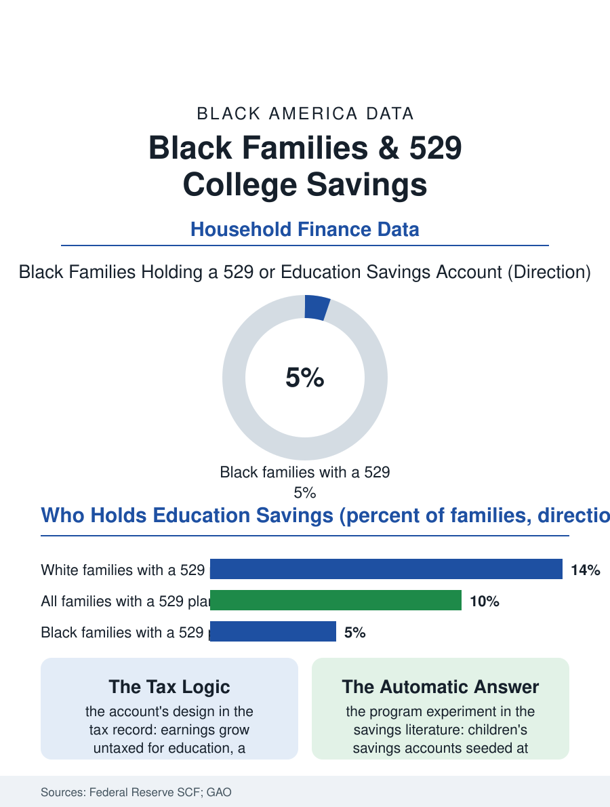

Black Education
The 529 Gap: College Savings Before College
College savings accounts are opened for a small minority of Black children, so the head start that compound growth gives other families rarely starts. The savings file.

Some children arrive at college with eighteen years of compound growth behind them. The vehicle is the 529 plan, the tax-advantaged college savings account, and its ownership map is one of the most lopsided in household finance: white families hold these accounts at roughly three times the rate of Black families, and the balances differ by more than the rates. This article reads the savings file, the record of a head start that mostly starts somewhere else.
Who Opens the Account
The Federal Reserve's Survey of Consumer Finances, the standard portrait of household balance sheets, finds education savings accounts in the possession of only a small minority of all families, and that minority is sorted by income and race together. Participation climbs steeply with earnings, because the account's core benefit, tax-free growth, is worth the most to households in the highest brackets and worth nothing at all to a family whose tax bill is already zero. The Government Accountability Office's analyses add the balance sheet: the typical participating family holds tens of thousands in the account, and participating families' incomes run at roughly triple the national median. For Black families the participation rate sits in the low single digits, and the median balance, where an account exists, is a fraction of the white figure. The gap is not a savings-rate gap in disguise; the same federal surveys show Black families saving at meaningful rates through retirement accounts and informal channels. It is a product gap: the 529 is sold through employers, advisors, and banks, channels that reach the already-advantaged first, and its tax design pays the largest subsidy to the families who need it least.
What the Head Start Buys
The research interest in these accounts was never only the money. Studies of children's savings accounts, including demonstration programs that seeded small accounts for newborns, find associations between holding even a modest account and a child's college enrollment and completion, effects larger than the balances alone would predict and strongest for low-income children. The proposed mechanism is expectation made tangible: a named account converts college from an abstraction into a household fact, referenced at kitchen tables for eighteen years. For Black families, whose college intentions run high in every survey in this atlas, the missing account is therefore a double loss, the dollars and the signal. The counterfactual arithmetic is plain in the SCF data: had Black families participated at white rates at white median balances, the aggregate difference would fund a meaningful share of the student debt the loan file records, debt that falls with documented heaviness on Black graduates and their parents. Instead the two files run in opposite directions, savings compounding quietly in one set of households, interest compounding in the other.
The Automatic Answer
The policy response documented in the last decade skips persuasion entirely: open the account for the child, automatically, at birth. A growing list of states and cities run children's savings account programs that seed a small deposit, tens to hundreds of dollars, into an account for every newborn or kindergartner, with supplements for low-income families, using birth records and school enrollment as the enrollment machinery. Early evaluations find near-universal participation by construction, erasing the racial participation gap inside the program's borders, and follow-up studies find the expectation effects appearing on schedule. The deposits are small enough to be cheap at public scale and large enough to anchor the identity the research describes. Private philanthropy has run the same play at larger stakes, funding accounts for whole cohorts of Black schoolchildren in single cities. The file's closing observation is about design rather than generosity: the 529 gap was produced by an opt-in system wrapped around a tax benefit for the affluent, and every successful repair in the record shares the same shape, default enrollment, public seed, and no form standing between a Black newborn and the account that says, in the only language compound interest speaks, we expect you there.
One more asymmetry belongs in the file, because it explains why the gap persists even as awareness campaigns multiply. The 529's state-level incentives, deductions and credits for contributions, are worth the most in the states with the highest taxes and to the filers with the highest incomes, so the public subsidy per dollar saved is largest precisely where family resources are largest. Black families in low brackets receive, in effect, a smaller public match for the identical act of saving, a quiet inversion of the program's stated purpose. The children's savings account programs answer this too, weighting their supplemental deposits toward low-income children, effectively running the subsidy in the direction the need runs. The comparison does not indict any family's decision to use the account as designed. It locates the gap where the data have always located it: not in how Black families value education, which every survey in this atlas shows they value intensely, but in how the instruments of that value were priced, marketed, and defaulted.
More in Black Education
Black Educational Attainment: High School Parity, the College Gap
About 89 percent of Black adults hold a high school diploma and one in four holds a bachelor's degree or higher — the attainment ladder, the college completion gap, and the generational trend.
Historically Black Colleges and Universities: Enrollment and Degrees
More than 100 HBCUs enroll roughly 290,000 students and award about one in six Black bachelor's degrees — an outsized share from a small sector. The federal education data.
Black College Enrollment: 2.4 Million Students
About 2.4 million Black students are enrolled in American colleges — nearly two-thirds of them women. The NCES enrollment data by sector, level, and trend.
Source: Federal Reserve, Survey of Consumer Finances; Government Accountability Office analyses of 529 plan participation; Education Data Initiative compilations.